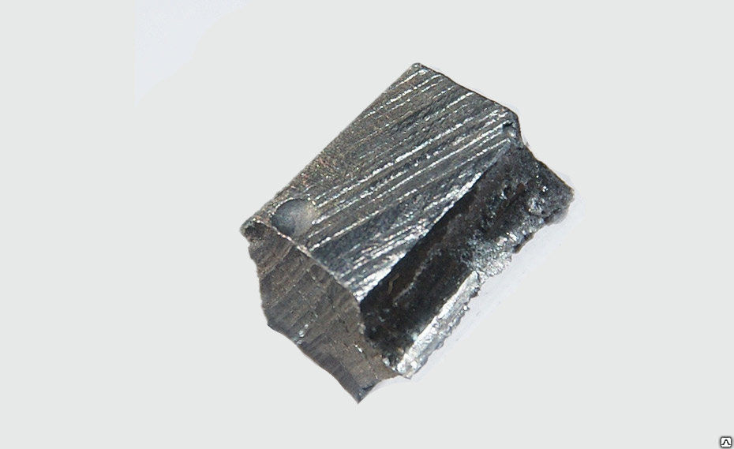

Неодим
Неоди́м (химический символ — Nd, от лат. Neodymium) — химический элемент 3-й группы (по устаревшей классификации — побочной подгруппы третьей группы, IIIB), шестого периода периодической системы химических элементов Д. И. Менделеева, с атомным номером 60.Относится к семейству лантаноидов (к его цериевой подгруппе). Простое вещество неодим — мягкий металл серебристо-белого цвета с золотистым оттенком.
Неодим был открыт в 1885 году австрийским химиком Карлом Ауэром фон Вельсбахом. Он разделил дидим — смесь двух редкоземельных металлов, трудно разделяемую из-за чрезвычайной близости их химических свойств и ранее считавшуюся индивидуальным химическим элементом, на неодим и празеодим. Получить неодим в чистом виде, практически свободном от примесей празеодима, удалось лишь в 1925 году.

Конфигурация внешних электронных оболочек атома неодима 4f46s2; в соединениях обычно проявляет степени окисления +3 (Nd2O3, NdF3), +2 (NdO, NdI2), +4 (Cs3NdF7); электроотрицательность по Полингу 1,14; атомный радиус 182. Неодим – серебристо-серый металл, до 885 °C существует в форме α-модификации с гексагональной кристаллической решёткой, плотность 7007 кг/м3. Высокотемпературная β-форма – объёмноцентрированная кубическая, плотность 6800 кг/м3, tпл 1016 °C, tкип 3027 °C. Неодим темнеет на воздухе в результате окисления кислородом, этот процесс ускоряется при нагревании, продукт взаимодействия – сесквиоксид Nd2O3. Энергично взаимодействует с минеральными кислотами, образуя растворы солей Nd(III) сиреневого цвета. При нагревании поглощает водород, образуя гидрид предельного состава NdH3. Неодим получают при переработке руд, содержащих РЗЭ; объём мирового производства около 7 т/год (2013). Используется для изготовления специальных стёкол, лазерных материалов, сплавов, магнитов.